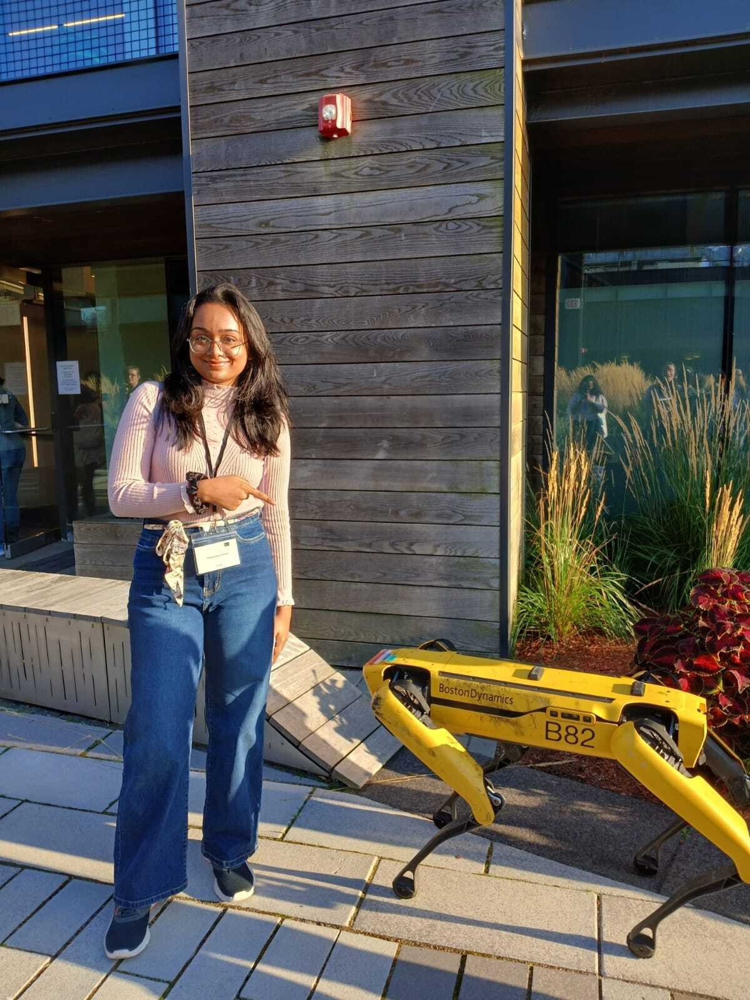
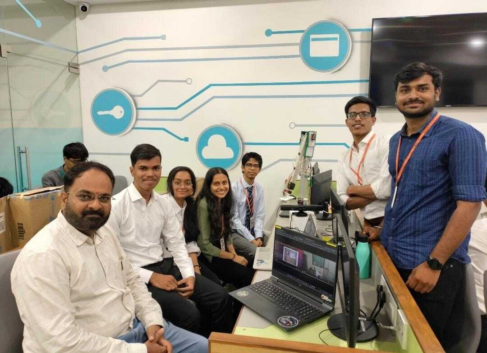
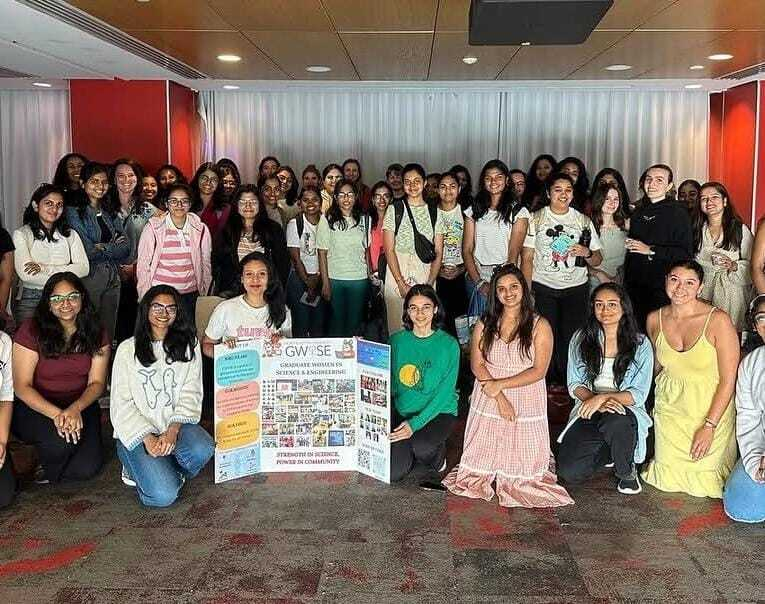
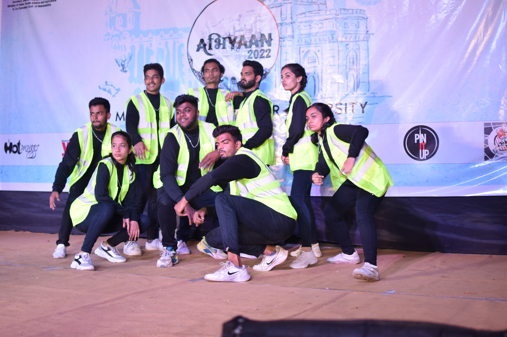

I build robots end to end: perception that finds an object in the real world, planning that decides what to do with it, and control that carries it out, then I validate that pipeline in simulation before getting it working on physical hardware. That full stack shows up across a peer‑reviewed IEEE paper, a Hello Robot Stretch RE3 pouring drinks in a lab, an underwater vehicle's navigation filter, and firmware for a chorded keyboard I'm currently building at my internship.
I like problems that pull on the whole stack: SLAM and sensor fusion when the question is where am I, manipulation and controls when the question is what do I do next, and embedded firmware and hardware debugging when the question is why isn't this working. A few of my projects lean toward assistive and human‑robot‑interaction design, including a Braille keyboard, a wearable for hearing‑impaired pedestrians, and a study on what makes a robot handoff feel safe, because I find that a genuinely good design constraint, not because it's the only thing I build.
Outside coursework, I've led a hackathon team at Smart India Hackathon, built the object‑detection model for our Flipkart Grid Hackathon entry, co‑authored that IEEE paper as an undergrad, and currently chair media and communications for Northeastern's Graduate Women in Science and Engineering. I'm graduating in December 2026 and looking for a full‑time role where I can keep doing exactly this: taking a system from a sensor reading to working hardware.

Northeastern University
University of Mumbai
Programming
ROS & Robotics
Perception
Simulation & Tools
Hardware
Certifications
- Designed firmware for an assistive Braille input device translating chorded keypresses into standard USB keyboard output. See the Braille Input Device project below for more.
- Diagnosed and resolved an intermittent I2C communication failure on a custom PCB by root‑causing insufficient pull‑up resistance, validating the fix via bus‑scan and register‑level testing.
- Authored a formal technical report documenting system architecture and handoff notes for future contributors.
- Developed PLC control logic for pump systems; built Python/SQL pipelines for predictive maintenance, cutting downtime 15%.
- Integrated flow/level sensors with automation logic, improving accuracy by 12% and cutting manual intervention by 40%.
Adding a photo for any project: save it as project-01.jpg (matching the project's number below) and drop it into the assets folder. It appears automatically.

Hackathons
- Flipkart Grid Hackathon (2023): proposed and built the object‑detection ML model for an industrial sorting arm; team passed Level 1
- Smart India Hackathon (2023): led the team pitching a QR‑based automatic medicine dispenser
- Kavach 2023: presented a mesh‑network detection concept for flagging apps used to evade cellular monitoring
- Tata Crucible Hackathon (2022): presented an accurate headcount system to speed up emergency response

Leadership
- Media & Communications Chair, Northeastern GWISE (Jun–Dec 2025): led digital presence and technical communications for Graduate Women in Science and Engineering, managing the website and social media strategy
- Technical Event Lead, IETE Students Forum (2023): led an EXTC‑focused technical event, handling planning, PR, promotional design, and judging
- Soft Skills Project Lead (2023): led a team through a simulated product‑launch exercise focused on communication and teamwork

Volunteering
- Community Servings, Boston, MA: volunteer preparing and packing medically tailored meals for people managing critical illnesses
- National Service Scheme (NSS), 2022–2024: community education & social‑welfare campaigns, designed outreach graphics, mentored underprivileged students
- COVID‑19 food distribution with NGO NSJ: delivered food to underprivileged families during the pandemic
- Swachh Bharat Abhiyan: school‑organized street clean‑up drive

Dance & Arts
- Hip‑hop and multi‑style dancer for several years
- Performed at the International Children's Festival and Kpop India Dance Contest
- Multiple solo competition wins; led a dance team through choreography and event coordination